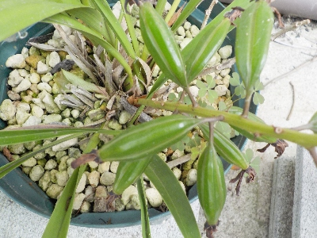
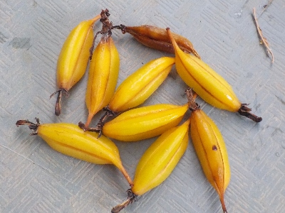
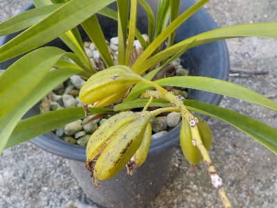
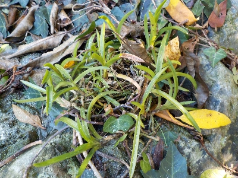

キンリョウヘンのタネが出来きそうです。
更新日: 2025/06/21

花が咲いた後に放置してたら実ができそうになってました。
これからどうなるのかな？房の大きさが大きいのでタネも大きいんじゃないかな？じゃあ新芽も大きそうだから育てれるんじゃないかな？とか思うんですけど、ネット記事を見ると難しそうなんですよね。
あれこれ見た結果、株分けするのが簡単かなと思いました。
今年は鉢いっぱいに育っているキンリョウヘンがなかったので株分けしませんでした。来年までに株を大きく育てたいです。
でもそんなことしてたらキンリョウヘンの鉢が増えすぎるんだろうな。
キンリョウヘンのタネの房が次々と落ちています。
更新日 : 2025/07/29

まだ緑のままのものもありますが、黄色くなってポトポトを房が落ちています。
最終的に残るものはあるかな？
キンリョウヘンから白い粉が沢山排出中です。
更新日 : 2025/12/20

手で触ったら小さな粉が沢山出てきました。小さすぎてタネって感じがしませんでした。
こんな小さなモノが育つの？葉っぱが出るの？出たって小さすぎて気づかないよ。雨が降ったら水といっしょに流れるよ。
私には無理だ。

キンリョウヘンの蘭菌と風蘭の蘭菌は違うみたいですが、風蘭の回りにタネをふりかけました。
あんまり育ってなくて、来年植え替えしないキンリョウヘンの株本にも粉をふりかけました。
奇跡が起こったら増えます。